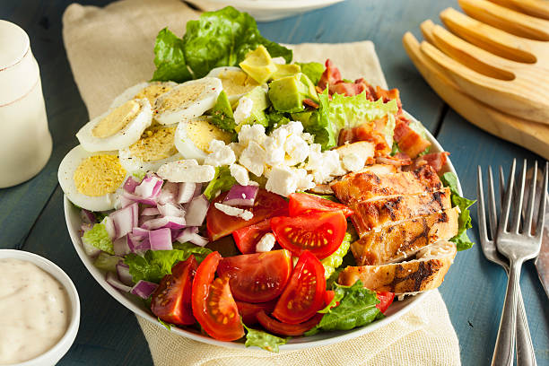

Odin Recipes
Cobb Salad

Description
Cobb salad is vibrant and hearty American classic, featuring rows of crisp lettuce topped with grilled chicken, creamy avocado, hard-boiled eggs, crispy bacon, juicy tomatoes, tangy onions, and crumbled cheese. Each bite delivers a perfect balance of flavors and textures, making it both satisfying and refreshing.
This colorful salad is typically served with a creamy dressing on the side, making it ideal for lunches, light dinners, or as a show-stopping dish for gatherings. Its combination of protein, healthy fats, and fresh vegetables makes it as nutritious as it is delicious.
Ingredients
- Romaine or mixed lettuce
- Grilled chicken breast, sliced
- Hard-boiled eggs, sliced
- Avocado, diced
- Bacon, cooked and crumbled
- Cherry tomatoes, halved
- Red onion, chopped
- Crumbled feta or blue cheese
- Salt and pepper
- Salad dressing (ranch, blue cheese, or vinaigrette)
Steps
- Wash and chop the lettuce, then arrange it as the base in a large bowl or platter.
- Prepare the toppings: grill and slice the chicken, hard-boil and slice the eggs, cook and crumble the bacon, dice the avocado, halve the tomatoes, and chop the onion.
- Arrange the toppings in rows or sections over the lettuce: chicken, eggs, avocado, bacon, tomatoes, onions, and cheese.
- Season with salt and pepper to taste.
- Serve with your choice of dressing on the side or drizzled over the salad.